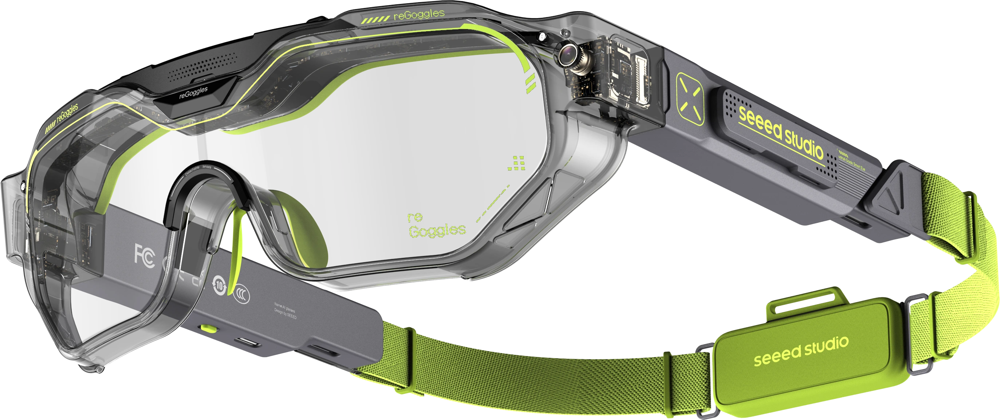

拖动白圆点＝定位点（整条线整体平移，圆点精确跟手落位，线形角度保持不变）；拖绿色方块＝折线拐点（拐点吸附到横向/45°线上，虚线圆点会跟着拐点一起动）；拖虚线圈＝线终点（吸附到横向或 45°）；拖文字块＝标签位置。坐标允许负值和超过 100% 的值（-80% 到 180%），线和文字可以自由向四周延伸，与真实站点行为一致。线条约束（2026-10-15）：拐点与终点自动吸附为横向或 45° 斜向，不允许其他角度，保证所有标注线统一。摆好后点"复制全部"发我。
